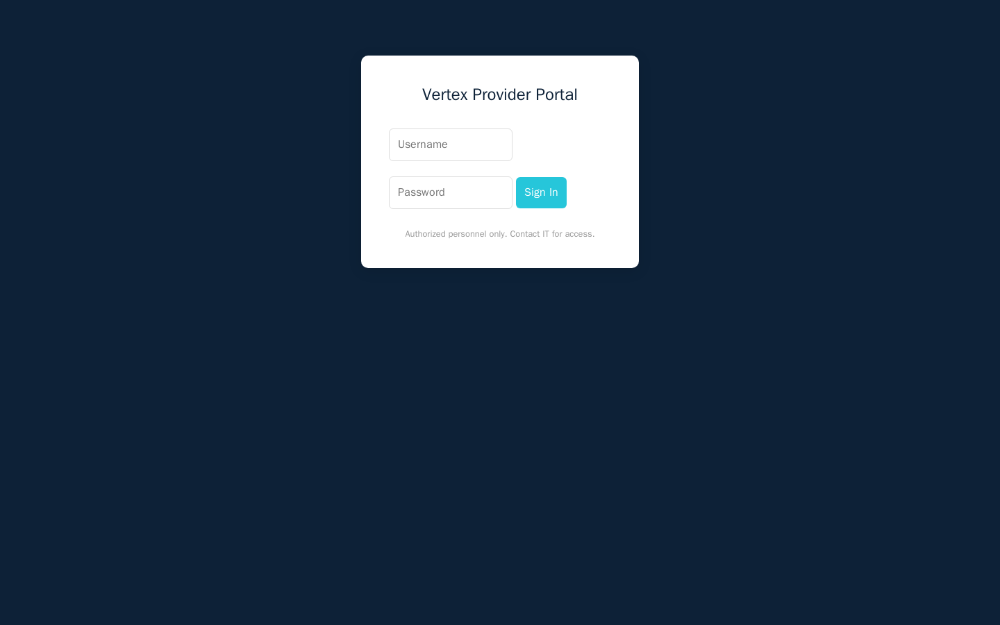
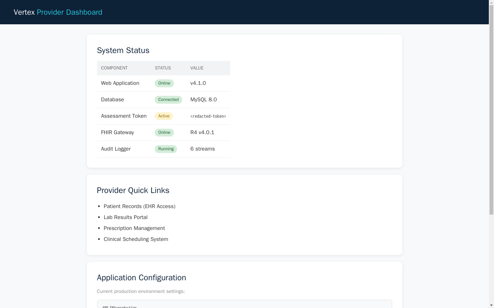
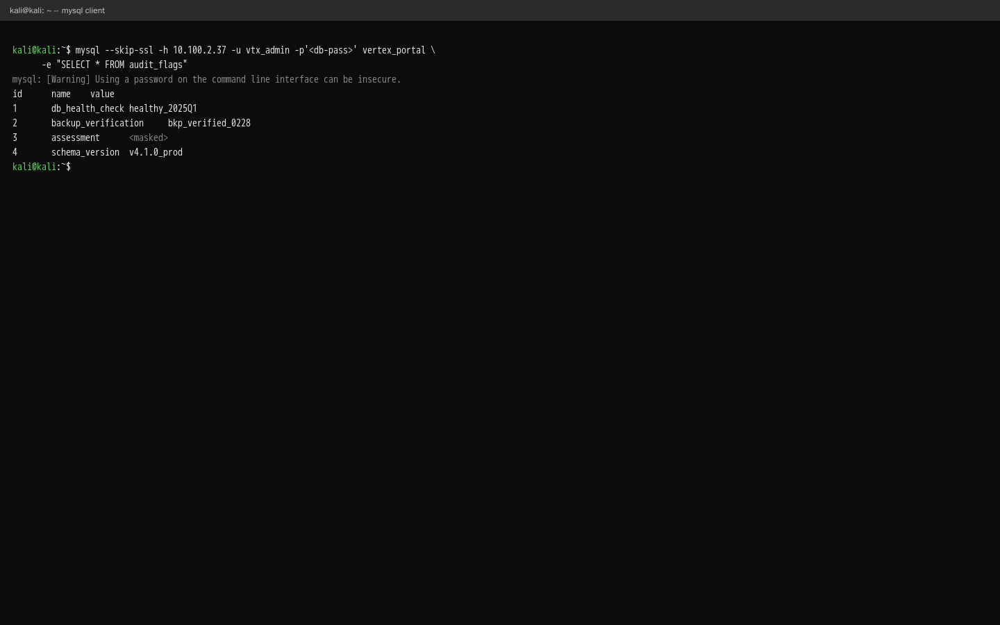

Exercise 10B: SQL Injection to Shell
Before You Begin
Exercise 10A introduced directory enumeration, hidden portals, default credentials, and database pivoting. Those skills carry forward into this exercise, but the entry point is different. Instead of logging in with a default password, you will bypass the login entirely by exploiting a SQL injection vulnerability in the authentication form.
SQL injection is one of the most impactful web application vulnerabilities. It has appeared in the OWASP Top 10 every year since the list was created, and it remains a leading cause of data breaches. Exercise 10B teaches you how SQL injection works, how to identify it, and how to exploit it using UNION-based techniques to extract data from a backend database.
Your VPN must be connected and your terminal ready before continuing.
Scenario
Vertex Healthcare is a regional healthcare technology company headquartered in Denver, Colorado. They provide electronic health record (EHR) integration services to over 40 clinics and hospitals across the western United States.
Your firm, Blackridge Security, has been engaged to perform a web application penetration test ahead of their upcoming HIPAA compliance review. Your point of contact, Rachel Nguyen (Director of IT Security), shared the following brief: "We recently deployed a new patient portal for provider authentication. The development team says it is production-ready, but I want your team to verify before we open it to all partner clinics. The portal should not be publicly accessible; it is supposed to be behind our VPN."
The engagement scope covers the web application on the target host and any backend services you discover on the subnet. Rachel mentioned they run a MySQL database on a separate server for the portal backend.
An assessment token has been split across the environment. Collect both parts and combine them as OCR{________} to complete the engagement.
Your Objectives
- Enumerate the web application and discover hidden paths via robots.txt and directory brute-forcing
- Identify a login form vulnerable to SQL injection
- Craft a UNION-based SQL injection payload to bypass authentication
- Extract database credentials from the authenticated dashboard
- Connect directly to the backend MySQL database and retrieve the assessment flag
Network Layout
The lab environment contains two target servers on the same subnet:
| Server | Role | Port | IP Offset |
|---|---|---|---|
| Web Application | Nginx + Flask patient portal | 80 | .16 |
| Database Server | MySQL 8.0 backend | 3306 | .37 |
Both servers are reachable from your attacker machine. The web application connects to the database internally, but the database also accepts direct connections from the subnet; a segmentation failure you will exploit in the final phase.
Background: SQL Injection
Why SQL Injection Exists
Web applications store data in databases. When a user submits a login form, searches for a product, or updates their profile, the application translates that action into a SQL query and sends it to the database. The vulnerability arises when developers build these queries by pasting user input directly into the SQL string rather than using safe mechanisms that keep data separate from code.
The pattern is not a rare oversight. SQL injection was first documented in 1998 and remains in the OWASP Top 10 over twenty-five years later (currently A03:2021: Injection). It persists because the vulnerable pattern is the simplest way to write database queries, and developers under deadline pressure often ship it without realizing the risk.
How a Login Query Works
When you submit a username and password to a login form, the application typically runs a query like this:
The database checks whether any row matches both the username and password. If a row is returned, the application considers the login successful. If no rows match, the login fails.
The vulnerability arises when the application builds this query using string formatting:
# VULNERABLE -- user input inserted directly into the query string
query = f"SELECT id, username, password, email FROM users WHERE username='{username}' AND password='{password}'"
Whatever the user types in the username field gets pasted directly into the SQL statement. If the user types a normal username, the query works as intended. But if the user types SQL syntax, the query structure changes, and the database executes the modified query without question.
Compare this to the safe approach:
# SAFE -- parameterized query keeps data separate from code
cursor.execute(
"SELECT id, username, password, email FROM users WHERE username=%s AND password=%s",
(username, password)
)
With parameterized queries, the database treats the username and password as data values, never as part of the SQL syntax. Even if the user submits SQL commands, they are interpreted as a literal string to search for.
Detecting SQL Injection: The Single Quote Test
The simplest test for SQL injection is typing a single quote (') into an input field. If the application is vulnerable, the single quote closes the string delimiter early and breaks the SQL syntax:
The three consecutive quotes create a parsing error. Depending on how the application handles errors, you may see:
- A database error message displayed on the page (most obvious sign)
- A different response compared to a normal failed login (the page looks different, returns a different status code, or takes noticeably longer)
- The application crashes or returns a 500 error
- A generic error page that differs from the normal "invalid credentials" response
Any change in behavior compared to submitting a normal username suggests the input is reaching the SQL query unsanitized.
Classic Bypass: ' OR 1=1-- -
Once you confirm the field is injectable, the next step is attempting an authentication bypass. The most common payload is ' OR 1=1-- -. Here is what happens when this is submitted as the username:
SELECT id, username, password, email FROM users
WHERE username='' OR 1=1-- -' AND password='anything'
Breaking this down piece by piece:
| Fragment | Purpose |
|---|---|
' |
Closes the username string that the application opened |
OR 1=1 |
Adds a condition that is always true: every row in the table matches |
-- - |
SQL comment syntax that discards everything after it, including the AND password= check |
The query now returns every row in the users table. The application sees a result and logs the attacker in as the first user returned, usually the admin account. The bypass works because many login forms only check whether the query returned a row: the entire authentication decision lives inside the SQL WHERE clause, and the injection just made it always true.
The ' OR 1=1-- - technique is effective but blunt: it returns every user in the table and logs you in as whichever row comes back first. You have no control over which account you land on. For more precision, UNION-based injection is the better tool.
UNION-Based Injection
UNION-based injection is more powerful. Instead of manipulating the WHERE clause to return existing rows, it appends an entirely new SELECT statement that returns data the attacker fabricates:
SELECT id, username, password, email FROM users
WHERE username='' UNION SELECT 1,'admin','x','admin@test.com'-- -'
AND password='anything'
Here is what happens step by step:
- The original query searches for a user with an empty username: no rows match
- The
UNION SELECTappends a second result set containing one fabricated row - The
-- -comments out the remaining original query (the password check) - The database returns the fabricated row as the query result
- The application sees a row was returned and considers the login successful
Critical rule: the UNION SELECT must return the same number of columns as the original query. If the original SELECT retrieves four columns (id, username, password, email), your UNION must also provide exactly four values. If the column count does not match, the database returns an error like "The used SELECT statements have a different number of columns."
The values in the fabricated row can be anything: the application just checks whether a row was returned. The attacker controls every field: the username that appears in the session, the email, everything. Full control over the returned row is what makes UNION injection powerful beyond simple authentication bypass.
Determining the Column Count
In a real assessment, you will not always know how many columns the original query selects. Two techniques help you discover the count:
ORDER BY method: inject ' ORDER BY 1-- -, then ' ORDER BY 2-- -, incrementing until the application returns an error. If ORDER BY 4 works but ORDER BY 5 fails, the query has four columns.
NULL method: inject ' UNION SELECT NULL-- -, then ' UNION SELECT NULL,NULL-- -, adding NULLs until the query succeeds. NULL is compatible with any column type, so this avoids type mismatch errors.
In this exercise, the column count is provided in the hints, but knowing these techniques prepares you for real-world assessments where you must discover it yourself.
The Full Attack Flow
The following diagram shows the complete path from initial reconnaissance to flag capture in this exercise. Notice that the first three steps (enumeration, robots.txt, hidden portal) are identical to Exercise 10A. The divergence begins at the login form, where SQL injection replaces default credentials as the entry technique.
graph TD
A["Scan target website"] --> B["Check robots.txt<br/>for hidden paths"]
A --> C["Run gobuster with<br/>common wordlist"]
B --> D["Discover<br/>/portal/"]
C --> D
D --> E["Access login form"]
E --> F["Test for SQL injection<br/>(single quote test)"]
F --> G["Craft UNION SELECT<br/>payload (4 columns)"]
G --> H["Bypass authentication<br/>access dashboard"]
H --> I["Collect Token 1<br/>from dashboard"]
I --> J["Extract DB credentials<br/>from config panel"]
J --> K["Connect to MySQL<br/>query audit_flags"]
K --> L["Collect Token 2<br/>assemble flag"]
style A fill:#4a90d9,color:#fff
style B fill:#4a90d9,color:#fff
style C fill:#4a90d9,color:#fff
style D fill:#e8a735,color:#fff
style E fill:#e8a735,color:#fff
style F fill:#e8a735,color:#fff
style G fill:#d9534f,color:#fff
style H fill:#d9534f,color:#fff
style I fill:#6aaa64,color:#fff
style J fill:#6aaa64,color:#fff
style K fill:#6aaa64,color:#fff
style L fill:#6aaa64,color:#fffColor key: Blue = reconnaissance, Orange = discovery, Red = exploitation (SQL injection), Green = post-exploitation and data extraction.
Exercise 10A vs 10B: Two Paths Past the Login Form
Both exercises follow the same structure: enumerate hidden paths, find a login form, get past it, extract data from the dashboard and database. The difference is how you get past the login.
graph LR
A["Hidden Portal<br/>Discovered"] --> B{"Login Form"}
B -->|"Exercise 10A"| C["Default credentials<br/>(admin / CompanyYear#)"]
B -->|"Exercise 10B"| D["SQL injection<br/>(UNION SELECT)"]
C --> E["Dashboard<br/>→ DB Credentials<br/>→ Flag"]
D --> E
style B fill:#e8a735,color:#fff
style C fill:#4a90d9,color:#fff
style D fill:#d9534f,color:#fff
style E fill:#6aaa64,color:#fffIn 10A, the developers left default credentials in place, a configuration error. In 10B, the developers wrote vulnerable code, a programming error. Both are common in the real world, and a penetration tester needs to recognize and exploit both.
Tool Primer: curl for Form Submission
You used curl in Exercise 10A to send GET requests and POST login forms. SQL injection testing uses the same POST technique, but the payloads in the form data contain SQL syntax instead of normal credentials.
Sending a POST request with form data:
The -d flag automatically sets the request method to POST: you do not need -X POST. In fact, using -X POST explicitly can cause problems: when combined with -L (follow redirects), curl will re-send the POST to the redirect target. Most login forms redirect to a dashboard via GET after success, so the dashboard route rejects the unexpected POST with a 405 Method Not Allowed error. By omitting -X POST and relying on -d to imply it, curl correctly switches to GET when following the redirect.
Common flags:
| Flag | Purpose |
|---|---|
-d |
Form data (URL-encoded key=value pairs separated by &); implies POST |
-c <file> |
Save cookies from the response to a file |
-b <file> |
Send cookies from a file with the request |
-L |
Follow redirects (login forms typically redirect after success) |
-s |
Silent mode (suppress progress output) |
Saving and reusing session cookies:
After a successful login (whether through default credentials or SQL injection), the server sets a session cookie. You must save this cookie and send it with subsequent requests to access authenticated pages.
# Login and save session cookie
curl -s -c /tmp/cookies http://<target>/portal/login \
-d 'username=admin&password=pass' -L
# Access authenticated page using saved cookie
curl -s -b /tmp/cookies http://<target>/portal/dashboard
The -c flag writes cookies to a file after the response. The -b flag reads cookies from that file and includes them in the next request. Without the cookie, the dashboard will redirect you back to the login page.
MySQL CLI (Review from Exercise 10A)
You will use the MySQL command-line client again in the final phase to query the backend database directly.
mysql --skip-ssl -h <db_ip> -u <username> -p'<password>' <database_name> \
-e "SELECT * FROM table_name"
| Flag | Purpose |
|---|---|
-h |
Hostname or IP of the database server |
-u |
Username to authenticate with |
-p |
Password (no space between -p and the password) |
-e |
Execute a single SQL query and exit |
Walkthrough
Step 1: Launch the Exercise
Open the platform in your browser and start the exercise environment. Wait for all containers to reach the Running state before proceeding.
- Navigate to Exercises and locate the Web track
- Find SQL Injection to Shell and click Launch
- Wait for the status to change to Running
- Note the target IP addresses displayed in the Active Lab View; the web application and database server run on separate hosts
Step 2: Browse the Main Site and Check robots.txt
Start the same way you did in Exercise 10A: visit the target website to see what is publicly visible, then check for a robots.txt file. The browse-then-robots.txt sequence is the same reconnaissance workflow you will use on every web application assessment.
Browse the main site
Browse to the main page first to see what is publicly visible.
The main site is a corporate healthcare landing page for Vertex Healthcare. The navigation links (Home, About, Services, Contact) are standard marketing pages. Nothing interactive is visible.
Check robots.txt for hidden paths
Now check robots.txt for paths the developers excluded from search indexes.
Review the output carefully. You should see Disallow entries listing paths the developers wanted to keep out of search engine indexes. One of those paths points to a portal. Note each path you find; you will visit them in a later step.
Step 3: Run gobuster to Confirm Hidden Paths
Reinforce your directory enumeration skills from Exercise 10A. While robots.txt reveals paths the developers intentionally listed, gobuster may uncover additional endpoints that the file does not mention.
Brute-force directories with gobuster
Run gobuster against the target with a common wordlist to discover endpoints robots.txt does not list.
Wait for the scan to complete. Compare the gobuster results with the paths you found in robots.txt. You should see a /portal entry among the results; a path that strongly suggests an internal login page. Additional entries like /api/internal/ and /backups/ may appear: you can investigate these, but the portal is the primary target.
Step 4: Access the Hidden Portal
Access the hidden portal
Navigate to the portal path you discovered with gobuster and robots.txt.
You should see a login form for the Vertex Provider Portal. Unlike Exercise 10A where the NovaTech staff portal had a build tag comment in the HTML source (token 1), the Vertex portal login page does not contain any comments, tokens, or embedded credentials. The HTML is clean.

The clean HTML means you cannot extract information from the page source, and you do not have any known credentials to try. You need a different approach to get past the login form.
Step 5: Test for SQL Injection
With no known credentials and no information leakage in the HTML source, test whether the login form is vulnerable to SQL injection.
Send the single quote test
Start with the single quote test described in the background section to see whether input reaches the query.
Observe the response. The application redirects you back to the login page with an error parameter: its generic "invalid credentials" response. A single quote alone does not give you access, but importantly, the application did not return a database error or block your request with a WAF (Web Application Firewall). The input reached the query.
Attempt the classic OR 1=1 bypass
Now test the classic authentication bypass payload.
curl -s -c /tmp/vtx-cookies http://<target_ip>/portal/login \
-d "username=' OR 1=1-- -&password=anything" -L
Check the response. If you see dashboard HTML instead of a login form, the bypass worked: the application only checks whether the SQL query returned a row, and OR 1=1 makes every row match. The -c flag saved your session cookie. You can skip ahead to Step 7 to access the dashboard.
If you want more control over the injection, or if you want to practice the more precise technique, proceed to the UNION-based approach below.
Step 6: Craft a UNION-Based SQL Injection Payload
The ' OR 1=1-- - bypass returns every user in the table and logs you in as whichever account comes back first. The UNION technique gives you more precision: you fabricate an exact row so the application receives only the data you choose.
The login query selects four columns: id, username, password, and email. Your UNION SELECT must provide exactly four values to match. The values themselves can be anything: the application only cares that a row was returned.
Username field:
Password field:
Here is what the database sees after the application pastes your input into the query:
SELECT id, username, password, email FROM users
WHERE username='' UNION SELECT 1,'admin','x','admin@vertex.com'-- -'
AND password='anything'
Walking through it:
username='': the original WHERE clause searches for an empty username and finds nothingUNION SELECT 1,'admin','x','admin@vertex.com': appends your fabricated row with four values matching the four columns-- -: comments out the rest of the query, including theAND password='anything'check- The database returns one row: your fabricated data
- The application sees a row was returned and logs you in
Submit the UNION injection
Submit the UNION payload through the login form to fabricate a matching row.
curl -s -c /tmp/vtx-cookies http://<target_ip>/portal/login \
-d "username=' UNION SELECT 1,'admin','x','admin@vertex.com'-- -&password=anything" -L
The -c flag saves the session cookie so you can access authenticated pages. The -L flag follows the redirect to the dashboard. If the response contains dashboard HTML rather than a login form, the injection succeeded.
Step 7: Access the Dashboard and Collect Token 1
After a successful injection, the application sets a session cookie and redirects you to the provider dashboard. If the dashboard content appeared in the Step 5 or Step 6 response, you already have it.
Access the dashboard with the saved cookie
Access the dashboard explicitly using the session cookie you saved during the injection.
Read through the dashboard HTML carefully. The System Status table lists several application components and their values. Look for the Assessment Token row: its value column contains the first token: sql1_un10n.
Record this value. Token 1 represents the fact that you bypassed authentication through SQL injection. In a real assessment, reaching an authenticated dashboard without valid credentials is a critical finding.

Step 8: Extract Database Credentials from the Dashboard
Continue reading the dashboard output. Below the system status table and quick links section, an Application Configuration panel displays environment variables in a monospace block. The exposed configuration panel repeats the same pattern you saw in Exercise 10A's NovaTech dashboard: developers exposing backend configuration in a web interface.
Look for these fields:
| Variable | Meaning |
|---|---|
DB_HOST |
Database server hostname |
DB_PORT |
Database port (3306 for MySQL) |
DB_NAME |
Database name |
DB_USER |
Database admin username |
DB_PASS |
Database admin password |
Record all the database connection values. These credentials give you direct access to the backend database, bypassing the web application entirely. Notice the DB_USER here is an admin-level account (not the limited application account the web app uses internally): this is a common mistake where dashboards expose higher-privilege credentials than necessary.
Step 9: Connect to MySQL and Retrieve Token 2
Query the MySQL backend directly
Use the database credentials from the dashboard to connect to the MySQL server. The database server's IP address is shown in the lab topology (the .37 offset on the subnet).
mysql --skip-ssl -h <db_ip> -u vtx_admin -p'Vtx_DB_R00t#' vertex_portal \
-e "SELECT * FROM audit_flags"
The audit_flags table contains several rows including health checks, backup verifications, and schema versions. Look for the row where the name column is assessment; its value column contains the second token: 3xtr4ct.
Record this value. Token 2 represents the fact that you pivoted from the web application layer to the database layer using leaked credentials: the same technique from Exercise 10A, but this time you reached the dashboard through SQL injection rather than default credentials.

Record Your Findings
robots.txt contents:
gobuster results:
Hidden portal path discovered:
Source Path robots.txt gobuster SQL injection details:
Injection Point Endpoint Injection Type SQL injection payload used:
Token 1 (from dashboard after SQL injection bypass):
Source Token Value Database credentials discovered:
Username Password Source Token 2 (from MySQL audit_flags table):
Source Token Value
Step 10: Interpret the Results
Review the two tokens you collected and consider what each one represents in the context of a real-world assessment.
-
Token 1 (dashboard via SQL injection): The patient portal's login form was vulnerable to SQL injection because the developers used string concatenation to build the SQL query. An attacker with no credentials at all could bypass authentication and access the full provider dashboard. In a healthcare context, this dashboard could expose patient records, clinical data, and system configurations. Authentication bypass of this kind is a critical finding under both OWASP and HIPAA frameworks.
-
Token 2 (MySQL database via leaked credentials): The dashboard's configuration panel exposed database admin credentials in plaintext. Combined with the fact that the database server accepted connections from any host on the subnet, an attacker can query the database directly. Direct database access bypasses any application-level access controls and exposes every table the admin account can read. In a real healthcare environment, this could include patient health information (PHI) protected under HIPAA.
The two tokens together demonstrate a chained attack: SQL injection provided the initial foothold (dashboard access), and information disclosure on the dashboard enabled lateral movement to the database layer. Neither vulnerability alone would be as damaging, but together they create a path from zero access to full database compromise.
Step 11: Assemble and Submit the Flag
Combine the two tokens in the order you discovered them:
Flag Format
Assemble the flag using the tokens in the order you discovered them:
OCR{sqli-bypass_db-extract}
Where sqli-bypass is from the dashboard after SQL injection, and db-extract is from the MySQL audit_flags table.
Assembled flag:
Paste the assembled flag into the Submit Flag form on the platform and click Submit.
Analysis Questions
Consider each question carefully before checking the answer. These questions connect the lab techniques to broader security concepts.
1. What is the difference between a UNION-based SQL injection and a blind SQL injection, and which is more efficient for data extraction?
Reveal Answer
A UNION-based injection appends a second SELECT statement to the original query, allowing the attacker to directly read the results in the application's response. A blind SQL injection occurs when the application does not display query results; the attacker must infer data by observing differences in the application's behavior (boolean-based) or response timing (time-based). UNION-based injection is far more efficient because the data appears directly in the response. Blind injection requires sending many requests to extract data one character at a time: for example, extracting a 32-character password hash via boolean-based blind injection would require hundreds of requests.
2. How do parameterized queries (prepared statements) prevent SQL injection, even when user input contains SQL syntax?
Reveal Answer
Parameterized queries separate the query structure from the data. The application sends the SQL template to the database first (e.g., SELECT * FROM users WHERE username = ? AND password = ?), and then sends the user input as separate parameters. The database engine treats the parameters strictly as data values, not as part of the SQL syntax. Even if a user submits ' UNION SELECT 1,2,3,4-- -, the database interprets the entire string as a literal username to search for, not as SQL commands. The query structure is fixed at compile time and cannot be altered by user input. Fixing the structure at compile time is why parameterized queries are considered the definitive defense against SQL injection.
3. Why does the UNION injection payload in this exercise require exactly four values? What happens if you provide three or five instead?
Reveal Answer
The UNION operator in SQL requires that both SELECT statements return the same number of columns. The original query in this application selects four columns: id, username, password, and email. If the UNION SELECT provides fewer or more columns, the database returns an error like "The used SELECT statements have a different number of columns." In a real assessment, determining the column count is a necessary step before building a UNION payload. Two common techniques: (1) inject ORDER BY N with increasing N until an error occurs: if ORDER BY 4 works but ORDER BY 5 fails, there are four columns; (2) inject UNION SELECT NULL,NULL,... adding NULLs until the query succeeds, since NULL is type-compatible with any column.
4. In Exercise 10A, the entry point was default credentials. In Exercise 10B, it was SQL injection. From a defender's perspective, which vulnerability is easier to prevent, and why?
Reveal Answer
Both are straightforward to prevent, but they require different types of discipline. Default credentials are a configuration problem, the fix is an organizational process that requires changing all default passwords before deployment and auditing for them regularly. SQL injection is a code problem, the fix is using parameterized queries consistently across the entire codebase. In practice, SQL injection is arguably harder to eliminate completely because it requires every developer on the team to follow the secure coding pattern for every query they write. A single missed query in thousands of lines of code creates a vulnerability. Default credentials, by contrast, can be caught with a single automated scan. Both, however, are considered "solved problems" that should not exist in production systems.
Key Takeaways
- SQL injection remains one of the most critical web vulnerabilities (OWASP A03:2021) because it bypasses authentication entirely and grants direct access to the database layer; it exists whenever developers use string concatenation instead of parameterized queries to build SQL statements
- UNION-based injection allows an attacker to append arbitrary SELECT queries to the original, returning fabricated data that the application trusts; the technique requires matching the exact column count of the original query, which can be discovered through ORDER BY or NULL-based probing
- The single quote test (
'in an input field) is the fastest way to check whether an input is reaching a SQL query unsanitized; any change in application behavior compared to normal input suggests the field is injectable - Parameterized queries (prepared statements) are the definitive defense; they keep user input separate from SQL syntax at the database level, making injection impossible regardless of what the user submits
- Chaining vulnerabilities continues to be the pattern in real-world assessments: directory enumeration (Exercise 10A) finds the portal, SQL injection (this exercise) bypasses the login, and credential leakage on the dashboard enables database pivoting (Exercise 10A technique); Exercise 6 will combine these with lateral movement and privilege escalation from Week 9